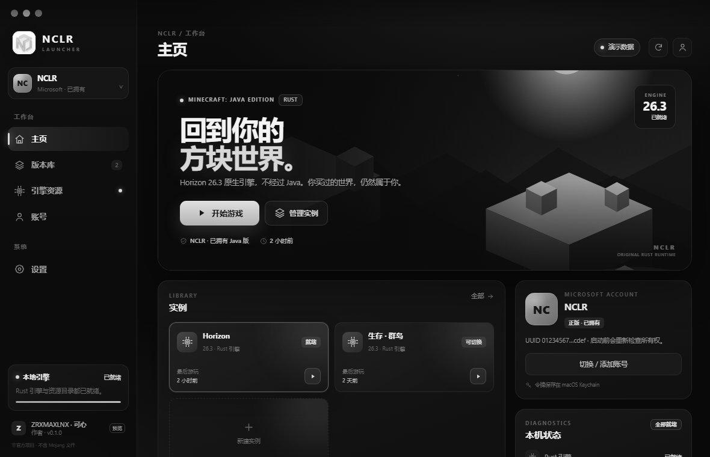
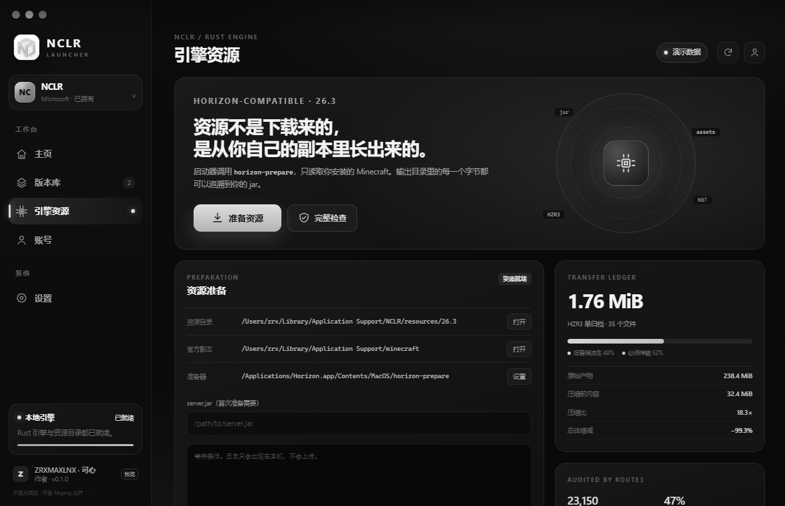
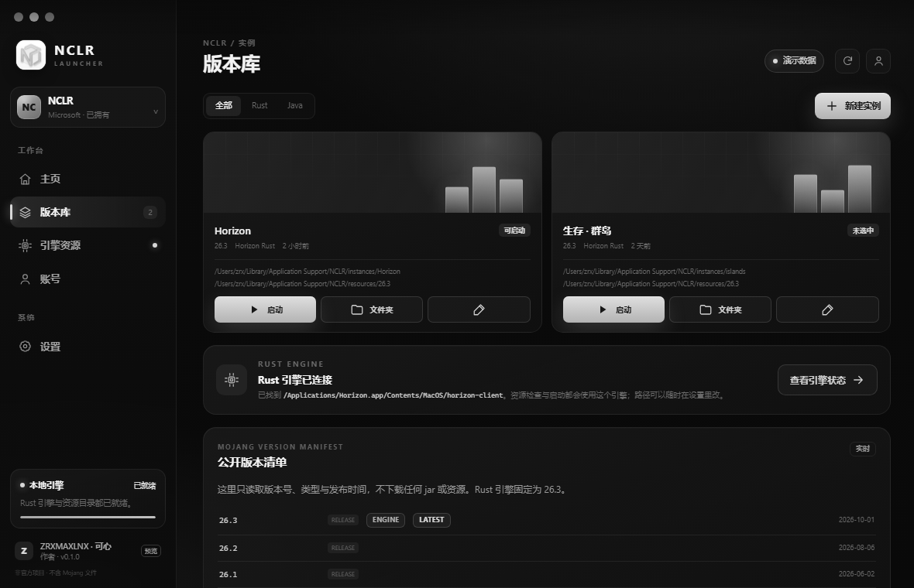
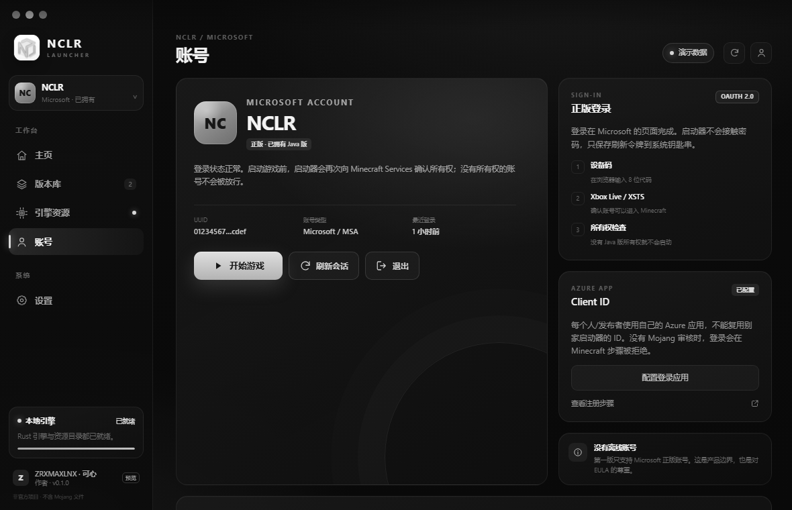
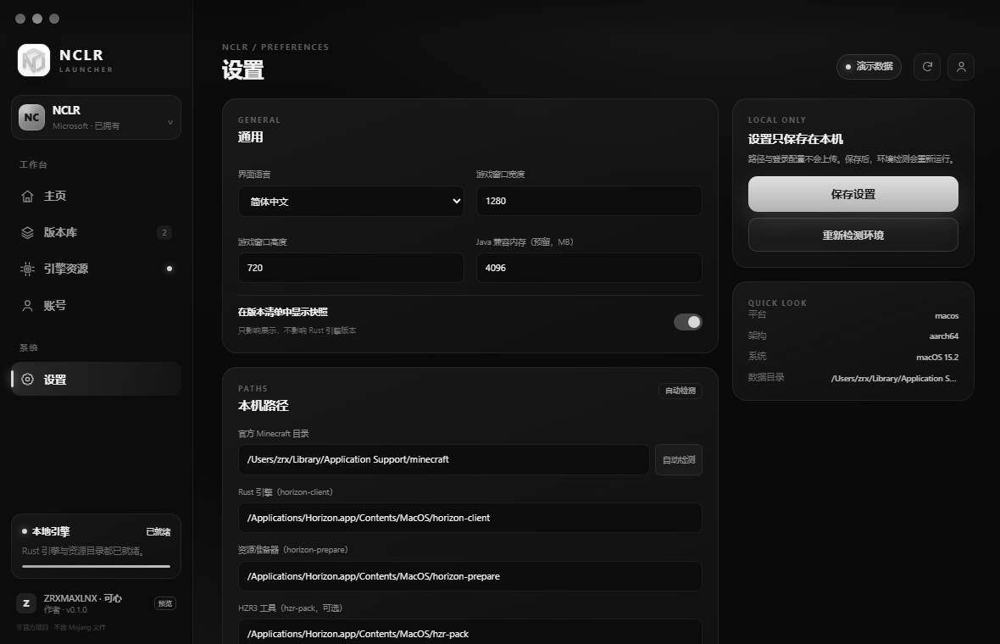

会话文件 120 秒
随机文件名、0600 权限、2 分钟兜底清理。引擎读完即用，过期文件不会被复用。

02
从账号到引擎。每一步都可以单独检查。
Microsoft 设备码 → Xbox Live → XSTS → Minecraft Services。令牌留在 iOS Keychain 与内存。
从 Mojang 官方版本清单读取 26.3 的 client.jar 与资源索引，确认运行环境。
hzr-export 在设备上读取 JAR 字节码与数据文件，生成 38 组 Horizon 数据表。
hzr-device 组装本地资源目录并生成会话文件，然后把一次性会话交给引擎。token 不进 argv。
03
在设备上导出 38 组数据表，不依赖 ship.hzr3。
14/14 创造模式分类、1,658/1,658 物品语义一致；原始 client.jar 与生成结果只留在当前设备。
设备端资源链 →04
不打包 Mojang 文件，也不提供资源镜像。
entitlements 检查放在启动前，不是登录时的一次性仪式。没有所有权就不生成会话。
0600、随机文件名、120 秒兜底清理。token 不进命令行、日志或公开 JSON。
资源准备只读你自己的安装。仓库和安装包里没有 Mojang jar、assets 或反编译代码。
代码是 clean-room 写的，也不提供离线破解路径。只服务拥有正版副本的玩家。
05
iOS 15+ / arm64 / 横屏；触控、陀螺仪与 Metal 渲染在同一个 App。
支持触控布局编辑、陀螺仪视角、外接键盘/鼠标与局域网联机；游戏文件首次准备时从官方服务下载。
iOS 功能与安装 →06
其余页面、下载和外部链接。
02 引擎 / Horizon 26.3
Horizon 把 Minecraft: Java Edition 26.3 的客户端用 Rust 与 wgpu 重写。NCLR 在 iOS 上负责登录、版本与资源准备、校验和启动，把一次性会话交给引擎。
01 / 启动
登录、检查、准备、启动。每一步都写清楚做了什么、失败时该修哪里。
Microsoft 设备码，令牌留在 iOS Keychain 与内存，不落明文磁盘。
从 Mojang 官方版本清单读取 26.3 的 client.jar 与资源索引。
hzr-export 在设备上生成 38 组数据表，hzr-device 组装本地资源目录。
生成 0600 会话文件，用 --session-file 交给引擎子进程。
日志为界面文案示意，数字与路径来自实际启动配置。
02 / 认证
每一步都能单独失败，也都能说清楚失败在哪。
随机文件名、0600 权限、2 分钟兜底清理。引擎读完即用，过期文件不会被复用。
所有权门禁不是登录时的一次性仪式。每次点开始游戏，都会重新检查 entitlements。
03 / 界面
版本清单、资源导出与诊断并排放在同一页。准备完成后，按钮从“准备资源”变成“开始游戏”，不需要猜现在该做什么。

03 资源 / 设备端
NCLR 不下载 ship.hzr3，也不分发 Mojang 资源。设备从官方清单取 client.jar 与资源索引，用 hzr-export 生成 38 组 Horizon 数据表，再由 hzr-device 组装到本机。
01 / 覆盖
38/38
Horizon 数据表 · 方块 / 物品 / 状态全覆盖
数值来自 hzr-export 的覆盖清单；原始文件与生成结果只留在设备。
hzr-export 覆盖 38 组 Horizon 数据表：方块、物品、碰撞、粒子、声音、命令与生物数据。所有转换在设备上完成。
03 / 方法
从 Mojang 官方版本清单获取当前版本的 client.jar 与资源索引，文件只保存在本机。
读取 JAR 字节码和 Minecraft 数据文件，生成 38 组 Horizon 数据表。
写入 horizon-resources.json 与完成标记；原始文件不进入 Git、CI 或发布包。
没有云端资源，也没有 ship.hzr3；所有官方文件只从官方服务下载。
04 / 流程
三个动作，全部在设备上完成。
从 Mojang 官方版本清单获取 26.3 的 client.jar 与资源索引，只保存在本机。
Mojang manifest → client.jar
hzr-export 读取 JAR 字节码与数据文件，生成 38 组 Horizon 数据表。
hzr-export → 38 tables
hzr-device 把数据表组装成本地资源目录与 horizon-resources.json。
hzr-device → resources
04 边界 / 第一版
NCLR 不打包 Mojang 文件，不做离线账号，也不复制别家启动器的代码。下面是这个版本实际遵守的边界。
每次启动前重新校验 Minecraft entitlements。没有所有权，就不生成会话，也不启动引擎。
随机名、0600、120 秒兜底清理；token 不进 argv、日志或公开 JSON。
资源准备只读你自己的安装。仓库与安装包里没有 Mojang jar、assets 或反编译代码。
不复制别家启动器代码，也不提供离线破解路径。产品只服务拥有正版副本的玩家。
01 / 令牌
令牌从微软出发，只在必要的地方停留。
NCLR 以 LGPL-3.0 发布；Horizon 与第三方组件继续适用各自的许可证。Minecraft 是 Mojang Synergies AB 的商标，本项目不是官方产品。
05 iOS / M1–M6
Horizon 引擎、NCLR 启动器与 iOS 集成被合进一个未签名开发构建。当前版本已经能在 iPhone 上启动引擎，重点是把账号、设备端资源导出和触控流程走通。
01 / 里程碑
每个里程碑都对应一次可复现的构建或真机日志。
打通工具链，产出未签名 IPA。
horizon-client-lib 编译并链接核心库在 aarch64-apple-ios 上通过编译和链接。
真机日志出现 Horizon 0.1.0 与打开文件数上限，引擎随后等待资源。
hzr-export 生成 38 组 Horizon 数据表，hzr-device 组装本地资源；不再依赖 ship.hzr3。
支持触控布局编辑、按键大小与位置调整、陀螺仪视角，以及外接键盘和鼠标。
局域网与服务器联机、Metal 高刷新率渲染已在链路里；完整可玩验证仍在推进。
02 / 导入
client.jarhzr-export 生成 38 组数据表hzr-device 组装本地资源IPA 不含任何 Minecraft 资源；首次准备时从官方服务下载。
06 关于 / v0.1.0
Horizon 提供 Rust 与 wgpu 的引擎，NCLR 负责 iOS 启动器、账号与版本管理、设备端资源导出和触控适配。作者是 NativeCraftLauncherRust 的 ZRXMAXLNX 与 可心，第一版 v0.1.0，2026-11-18。
01 / 来源
产品名是 NCLR；仓库在 NativeCraftLauncherRust 组织。
引擎
Minecraft: Java Edition 26.3 的 Rust 与 wgpu 客户端实现；NCLR 以它为引擎基础。
Rustwgpu资源链
hzr-export 在设备上从官方 client.jar 生成 38 组 Horizon 数据表，hzr-device 组装本地资源，不依赖 ship.hzr3。
产品
面向 iOS 的独立启动器：界面、iOS 集成、账号与版本管理、触控布局和兼容修复。
iOSLGPL-3.002 / 界面



03 / 下一版
在 iOS 真机完成签名、设备授权和首次安装验证。
用真实 Microsoft 账号完成登录与 Minecraft 所有权校验。
在设备上完成 26.3 资源导出与首次进入世界。
补齐触控布局、陀螺仪、外接键盘/鼠标和联机稳定性。
自动更新：签名清单 + 回滚。
04 / 链接
不是 Mojang / Microsoft 官方产品，未获其背书。你需要自己拥有 Minecraft: Java Edition。
07 下载 / L1.1
最新测试包是 L1.1，iOS 15+ / arm64。未签名开发构建；不含游戏资源，首次准备从官方服务下载。
01 / 最新版本
单 App：点“启动游戏”后才启动引擎。含键位映射、设备端资源导出和 late-start 修复。
未签名开发构建。签名、设备授权和安装由使用者自行完成；IPA 不包含任何 Mojang 游戏资源。组织仓库尚未发布 Release，最新构建为 #10。
02 / 安装
用 Sideloadly 安装未签名开发构建，或用自己的 Apple ID 重签。
打开 NCLR，先进入启动器；点“启动游戏”进入引擎。